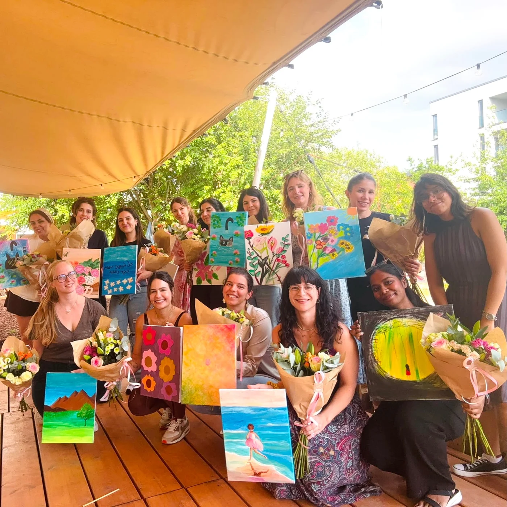
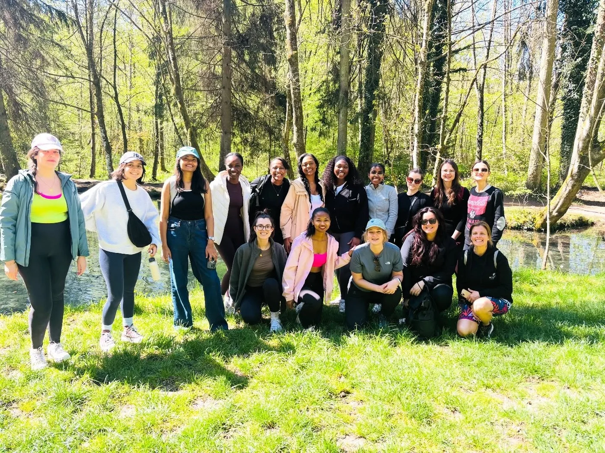
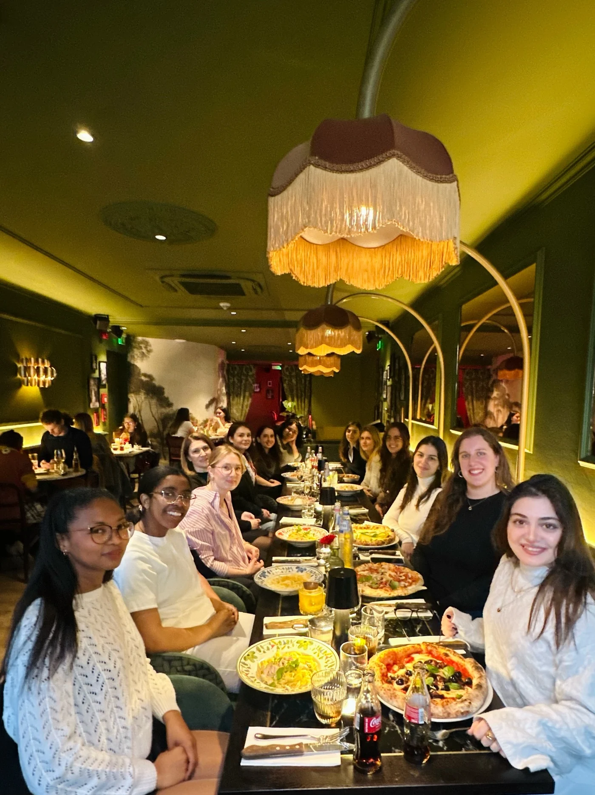
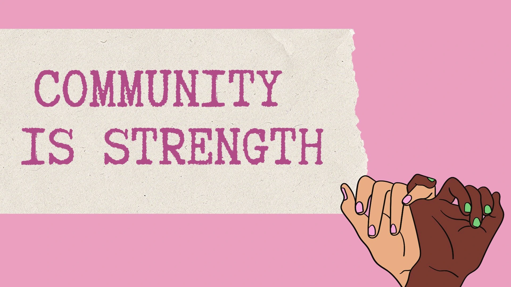

You don’t have to do this alone.
Whether you landed in Luxembourg last week or you’ve been here your whole life, having people to call when you need a hand, a laugh, or someone to hang out with matters. That’s our starting point.
GIRLS IN LUXEMBOURG
A community of women building friendships, sharing adventures, and making Luxembourg feel a little more like home.
Find your communityCome as you are. There’s a place for you.
A LITTLE ABOUT US
A community of women building friendships, skills, and support networks across the Grand Duchy.
Everything started as a simple “what-if” thought in November 2025. Instagram was our first initiative, then WhatsApp. In less than a year, the community grew to hundreds of members all around Luxembourg.
A small country doesn’t have to mean a small circle. That’s exactly why we created Girls in Luxembourg. Meet-ups, sports, hiking, crafts, and many other social activities are a daily part of our community.
Whatever you’re into, there’s already a group of women doing it. Don’t hesitate to join — we would be more than happy to meet you, too.
Let’s find your kind of people


WHAT WE’RE HERE FOR
Because finding your feet is easier
when someone’s walking beside you.
Whether you landed in Luxembourg last week or you’ve been here your whole life, having people to call when you need a hand, a laugh, or someone to hang out with matters. That’s our starting point.
Learning a language, figuring out your career, picking up a new hobby: it’s all easier and more fun with company. In our sub-groups, you’ll never do the hard or fun stuff alone.
This is a small country, and we want it to feel that way in the best sense: familiar faces, local know-how, and a real sense of belonging — not just a place you happen to live.
THE EVERYDAY MOMENTS THAT MATTER
Shared passions, little adventures, and a place to be yourself.

We welcome women aged 18 and over who live or work in Luxembourg or the neighbouring regions of France, Belgium and Germany. Whether you just arrived or have always called this place home, you’re welcome.
Yes! Community and group membership are free. Some activities or workshops have a contribution to cover their costs, which is always shared upfront.
Fill in our membership request form and choose the groups that interest you. Our admins review requests and add you manually, usually within 2–4 days and no longer than a week.
We mostly communicate in English, but all languages are welcome. If you’d like to practise or share a language, our Language Exchange group is a lovely place to start.
Absolutely. Join as many groups as genuinely interest you. From book chats to weekend hikes, there’s no need to choose just one part of yourself.
We share plans in each club’s WhatsApp group and on Instagram and TikTok. You can also explore our current activities on our community page.
YOUR NEXT CHAPTER HAS GOOD COMPANY
One hello. A world of possibilities.
We’d love to meet you.
YOUR COMMUNITY, AT A GLANCE
Our story, your circles, and everything you need to feel part of it.
A LITTLE TIME. A REAL DIFFERENCE.
We’re looking for women who would like to support us as admins of one or more of our WhatsApp chat groups. Help keep our circles active, welcoming, and full of life.
Volunteer with usQuestions about joining, partnerships, or press enquiries? We’re happy to hear from you. Use our contact form and select the subject that fits your message.
Before writing, take a look at our FAQ section. Please allow one to two business days for a response.
Have feedback or a suggestion? Visit our Feedback page. Your opinion helps our community grow.
hello@girlsinlu.comBorn or just landed in Luxembourg? Don’t worry! A community of women is here for you.
Everything started as a simple "what-if" thought in November 2025. Instagram was our first initiative, then WhatsApp. After less than one year, the community grew so fast, and now it has hundreds of members all around Luxembourg.
A small country doesn't have to mean a small circle. That's exactly why we created the Girls in Luxembourg community. Meet-ups, sports, hiking, crafts, and many other social activities are a daily part of our community. Whatever you are into, there's already a group of women doing it; don't hesitate to join. We would be more than happy to meet you too.
followers on Instagram
followers on TikTok
members in WhatsApp
members in our LinkedIn private group
Whether you just landed in Luxembourg last week or you've been here your whole life, having people to call when you need a hand, a laugh, or someone to hang out with matters. That's the whole starting point.
Learning a language, figuring out your career, picking up a new hobby: all is easier and more fun with company. In our sub-groups, you will never do the hard or fun stuff alone.
This is a small country, and we want it to feel that way in the best sense: familiar faces, local know-how, and a real sense of belonging, not just a place you happen to live.
We are looking for women who would like to support us as admins of one or more of our WhatsApp chat groups.
If you have questions about joining, partnerships, or press enquiries, we’re happy to hear from you. Contact us through our form and select the desired subject line.
Before sending us a message, we recommend checking our FAQ section, as you may find the answer there. Please allow one to two business days for a response.
For feedback or suggestions, please visit our Feedback page.
There is a group for your interests! Choose to join one or more!
GirlsClub
This is our main chat, bringing together all conversations from Beauty and Coffee Club to everyday chats, fun outings, cinema and everything in between!
Led by Fabrina
BookClub
Our little refuge for all women who love reading. A cosy and welcoming space to share your favourite reads, discover new books, exchange thoughts, and connect with like-minded women over the magic of storytelling.
Led by Cynthia
Moms'Club
Being a mom is a beautiful journey, and having a supportive community around you can make it even more meaningful. This space welcomes moms and moms-to-be to connect, share experiences, discover new friendships, and enjoy the little moments of motherhood together.
Led by Zahra
Walk/HikeClub
An active space for women in Luxembourg who love to explore the city through casual walks or hiking adventures!
Led by Fabrina
FitClub
A women's space dedicated to staying truly active and having fun while doing it! From badminton, paddle and tennis to yoga, pilates and run club, this group brings together all things sport and movement.
Led by Khanim and Christina
CareerClub
This space invites you to connect, meet like-minded women, empower your professional skills, network and find your next role of your career.
Led by Marta (LinkedIn group) and Enare (WhatsApp group).
Craft Corner
A relaxed space to make things with your hands and pick up a new skill from someone else in the room.
Led by Marta
Language Exchange
Whether you’re looking for one-to-one sessions or interactive group sessions, this space helps you find people to practise or improve your language skills with.
Led by Marta
TravelClub
A space where women come together to share everything about travelling! From hidden gems and city guides to travel tips and country discoveries, this is your go-to room for all things adventure. We share advice, recommendations, and inspire each other to explore the world.
Led by Enare
Events shared by the community. Check the event page for dates, availability and booking details.
Join Sisterhood of the Travelling Journals (Ongoing) · LumaRHODE X SEPHORA on 30 September · LumaPumpkin Patch Walk · LumaPottery painting session on 18 October · LumaOur community is happy to partner with businesses, venues, and other communities that want to genuinely support women in Luxembourg. If that's you, we'd love to talk.
Our partnerships can have different formats:
What partners get:
Yes. Membership in the community and all sub-groups is free. Some events (like workshops with a venue cost) may ask for a small contribution, always stated upfront.
The community language is mostly in English, but any language is welcome. If you want to learn or teach a language, we recommend you to join our Language Exchange Group.
Of course! Join as many as genuinely interest you.
To get into any of our WhatsApp groups, you need to fill out our request form. After the assessment, we will add you manually to the groups you have requested.
Girls in Luxembourg is a women's community at its core, so our groups and events are women-only.
Yes, to ensure the purpose of this community, we only accept women who live or work in Luxembourg and border regions of France, Germany and Belgium.
We communicate our events in our socials (Instagram, TikTok) and in the WhatsApp group dedicated to the topic of the event.
Of course! We want to be this engaged and active, so recommendations and proposals are welcome.
First of all, please reach out to the organiser as soon as you know that you won’t be able to come, to stay informed. Some events have a certain level of organisation, and this helps us to readjust. Besides, that free slot can be used for someone who could not attend the event because the ticket was sold out, so you are giving this opportunity to them. If the event has a cost, we will follow our refund policy.
Depending on the event, some events might have a cost. This price covers the logistics of the event. Note that we work to make the events affordable for everyone.
For the moment, we are not accepting new proposals. This ensures the well management of the current ones. You can explore the community here.
Yes, a short one: be respectful, keep shared personal information private, and treat every group with the same care you'd want shown to you. Group leads and admin can remove members who don't. For new joiners, they have to accept these guidelines in order to be accepted.
The founders/admins will assess the situation and will take the necessary precautions accordingly. The member might be permanently removed from the community.
When you join a WhatsApp group, your phone number will be visible for others. The information you share when you use the ticket is used only for organisation purposes of that specific event. We do not keep this information for other reasons.
You can reach out to the organiser of the event, send a WhatsApp message to the founder of the group under which the event was created or to give us your feedback using this form.
You can give a short presentation the first time you join the WhatsApp community, explaining what you do, but we don’t accept long texts or spam messages. You can reach out to us using this form for other types of promotion. Select Sponsorship or collaboration and send us your proposal.
Yes, under the Career group, with the agreement of the founder/admin [Ena] if it is on WhatsApp or [Marta] if it is on LinkedIn.
We currently do not have this content, but you can be the first. For this, please reach out to us using this form. Select Sponsorship or collaboration and send us your proposal.
Sure! We are here to build any type of connection and support.
The team will be available in the WhatsApp group they lead. You will recognise them by looking at the tag.
Of course, there is no commitment to stay. In case you leave, we will encourage you to share your feedback using this form or send a message to the founder of the group. We want to understand what it works and what doesn't, so we can implement changes.
We want to ensure the correct assessment so it might take 2-4 days, but not longer than one week.
You have to be at least 18 years old.
Still unsure about something? Reach out to us through our form.
Last updated: 20 September 2026
Most of what we do is free, but some events have a cost to cover logistics (venue, human or material costs). Prices are listed clearly before you sign up.
If you cancel more than 7 days before the event, you'll get a full refund. If you cancel within 7 days, we can only offer a refund if we're able to fill your spot from a waitlist. Otherwise, it's non-refundable, since venue and material costs are usually already committed.
If we cancel or reschedule an event, you'll always get a full refund or the option to roll your payment over to the new date.
For trips (Travel Club group): A deposit may be required to hold your spot; deposits are non-refundable once travel bookings are made on your behalf. The remaining balance follows the same 7-day cancellation window above.
To request a refund, contact us at hello@girlsinlu.com with the event name and date.
Last updated: 20 September 2026
Girls in Luxembourg collects only the information needed to run the community: your name, number, and/or email when you fill out one of the forms available on our page (contact us, join request or feedback).
What we use it for: matching you to the WhatsApp group(s) you're interested in, sending you event details, and following up if you contact us or leave feedback. We don't use your information for anything beyond running the community.
Who sees it: your information is visible to the core team and the relevant sub-group lead(s) for groups you've asked to join. We don't sell, rent, or share your data with any third party.
Where it's stored: submissions are stored in our internal Notion workspace, accessible only to the team.
How long we keep it: for as long as you're an active member.
Your rights: you can ask us at any time to see what information we hold about you, correct it, or delete it entirely by emailing us at hello@girlsinlu.com.
Changes: if this policy changes meaningfully, we'll post an update here and let active members know.
Welcome to our safe space for women in Luxembourg to build meaningful friendships, support one another, and create genuine connections.
To help keep everyone safe, any member wishing to sell, promote, or offer items or services (including event tickets, clothing, personal items, business services, etc.) must first obtain approval from the admin before posting in the group.
This helps maintain trust within the community and provides transparency regarding arrangements, payments, refunds, and other related matters.
This community is intended to be a supportive and safe space for women. Members are welcome to share personal experiences, challenges, or difficult life situations within the group chat if they feel comfortable doing so.
However, stories, personal information, screenshots, photos, or conversations shared in the group should not be discussed or shared outside the group without the person's explicit consent.
While this is a women-focused community and we do not generally allow men in the group, we recognize that members may discuss friendships, relationships, family matters, or personal challenges.
Please be respectful, kind, and considerate to everyone at all times. Avoid harassment or negative comments about other members or people outside the group.
Although we strive to maintain a trusted and supportive environment, this remains a group of individuals with different backgrounds and experiences. Please use your own judgment when sharing personal information, arranging meetups, making purchases, or engaging in private conversations.
Let's work together to keep this community welcoming, supportive, respectful, and safe for all women.
Our admins may take photos and videos during meetups and events for social media purposes. However, we deeply respect everyone's comfort and privacy. If you prefer not to appear in any photos or videos, simply let us know, and your wish will be fully respected.
Our contact form will be available here soon. In the meantime, email us with your question.
hello@girlsinlu.comWe would love to hear your ideas. Our feedback form will be available here soon. In the meantime, send us an email.
hello@girlsinlu.comOur membership form will be available here soon. In the meantime, email us to ask about joining.
hello@girlsinlu.com